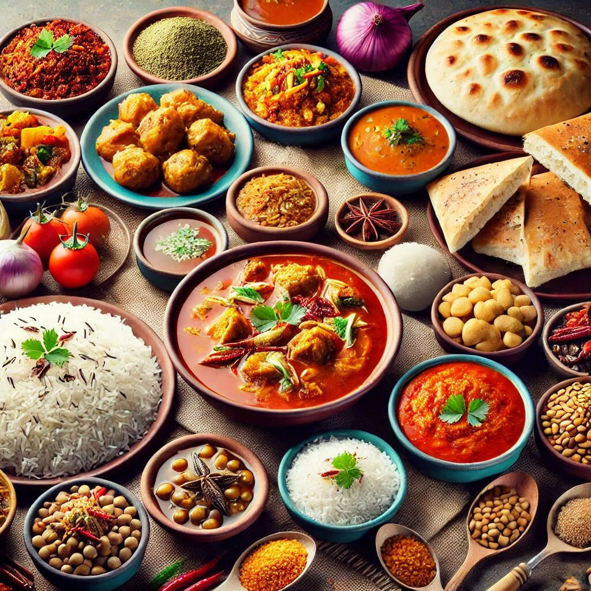
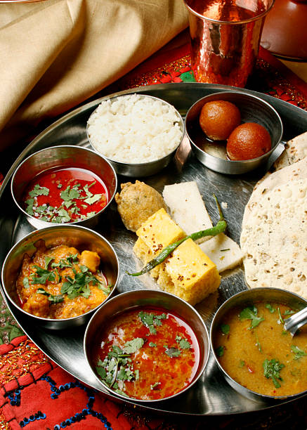
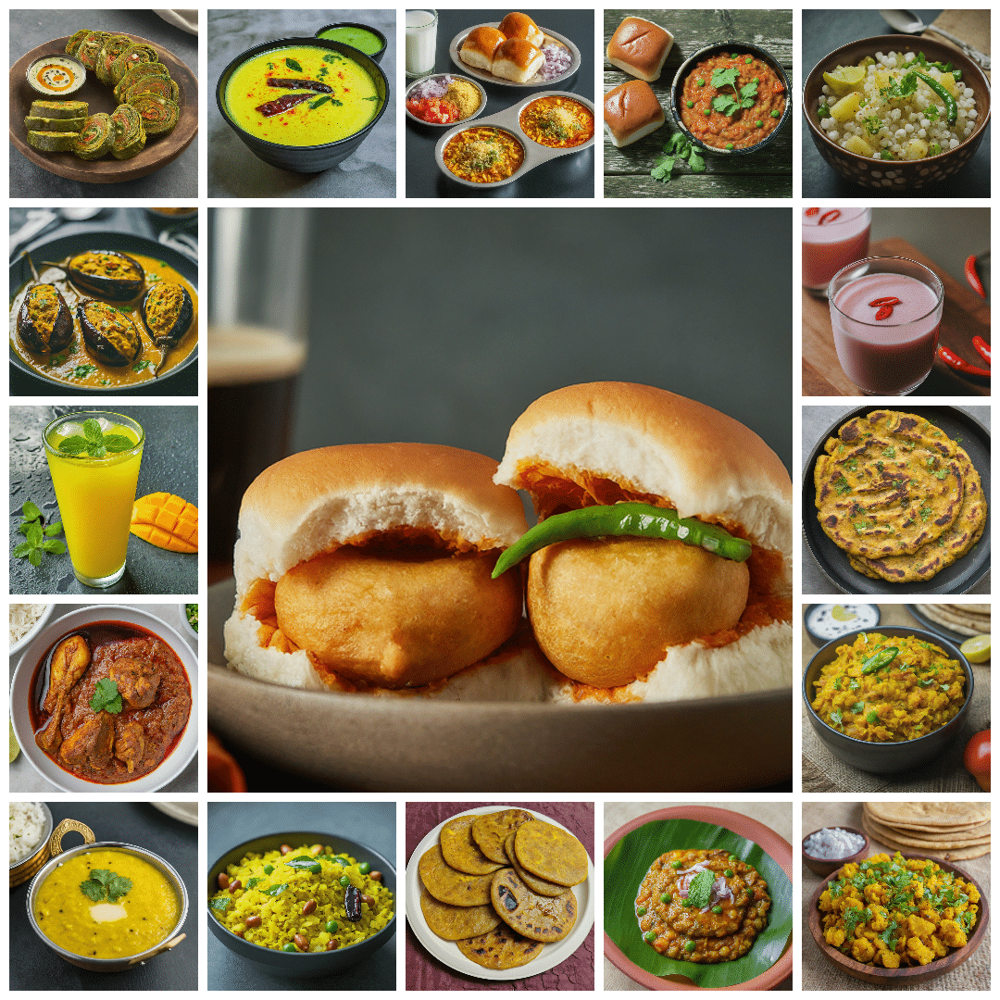

< !-- Heading -->
A cuisine is a style of cooking characterized by distinctive ingredients,
techniques and dishes,
and usually associated with a specific culture or geographic region. Regional food preparation
techniques,
customs and ingredients combine to enable dishes unique to a region.
Cuisines
Bengali Food

Bengali cuisine is a vibrant and diverse culinary tradition characterized by a rich blend of
flavors,
fresh ingredients, and a strong emphasis on rice and fish. It's known for its use of fresh
ingredients,
mustard oil, and a distinct spice blend, often incorporating sweet, sour, and spicy elements.
South Indian food

South Indian cuisine is a vibrant and diverse culinary tradition that emphasizes rice, lentils,
and a
wide array of spices. It's known for its use of coconut, tamarind, and curry leaves, which
contribute to
a distinct and flavorful taste. Dishes are often vegetarian, with popular options including
idli, dosa,
and uttapam.
Gujrati food

Gujarati cuisine is characterized by its rich and diverse vegetarian dishes, often combining
sweet,
spicy, and savory flavors. It's known for a wide variety of farsans (snacks), traditional thalis
(platters), and the use of spices like turmeric, cardamom, and cumin. The cuisine reflects the
cultural
influence of Jain, Hindu, and Muslim traditions in the region.
Maharashtra food

Traditionally, Maharashtrians have considered their food to be more austere than others.
Maharashtrian
cuisine includes mild and spicy dishes. Wheat, rice, jowar, bajri, vegetables, lentils and fruit
are
dietary staples. Peanuts and cashews are often served with vegetables.